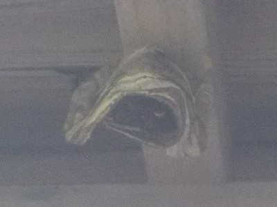
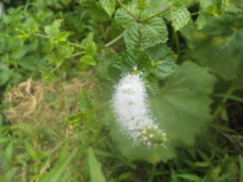
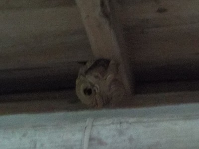
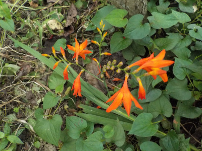
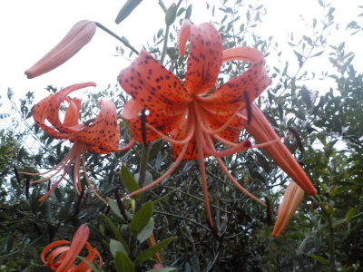
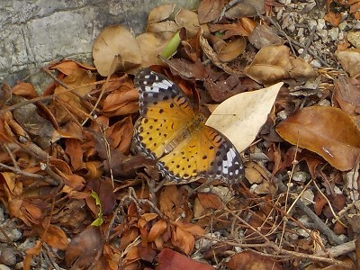

スズメバチの巣を綺麗に取り除きました。
2022/07/31

スズメバチが壊れた巣を再生しようとしています。
巣の中がまる見えなので、全部が出かけたら巣を落とそうと思っていましたが、常に1匹残っていました。
しかたないので1匹だけの時に近づいて、近距離で殺虫剤をかけました。
その後すぐに巣を綺麗に取りました。
これでスズメバチとはお別れになるでしょう。
2022/07/31

スズメバチが壊れた巣を再生しようとしています。
巣の中がまる見えなので、全部が出かけたら巣を落とそうと思っていましたが、常に1匹残っていました。
しかたないので1匹だけの時に近づいて、近距離で殺虫剤をかけました。
その後すぐに巣を綺麗に取りました。
これでスズメバチとはお別れになるでしょう。
2022/07/31

何年も前からミントが植わっていますが、花を見たのは初めてかもしれないです。
ミントはお茶にしたり、食べ物に添えたり、香りを楽しむとか言いますが、それぞれ好きじゃないので使っていませんでした。
なのでミント自体をあまり見ることはありませんでした。
2022/07/24

夕方に発見したので写真が暗いです。
暗くなって蜂が飛び回らなくなってから、クワでたたき落としました。
落ちた巣から出た蜂は、また軒下の巣があった場所に集まっていたので、再び巣を作るかもしれません。
2022/07/17

ヒメヒオウギズイセンがあちこちで生えてます。
邪魔なので切ってしまえばいいですが、花がキレイなので残してしまいます。
邪魔なものは邪魔です。余計な手間が掛かるしストレスになるので、次に邪魔だと思ったら容赦なく切ろうと思います。
2022/07/13

庭のオニユリが咲きました。夕方に写真を撮ったので暗いです。
近くで見るとキレイじゃないですね。
2022/07/10

あんまり見ない蝶がいるなって近づいたら、逃げなかったので写真を撮りました。
ネットで調べたら、幼虫は花の苗を食べるらしいです。
過去の日記
熱中症に注意しましょう。